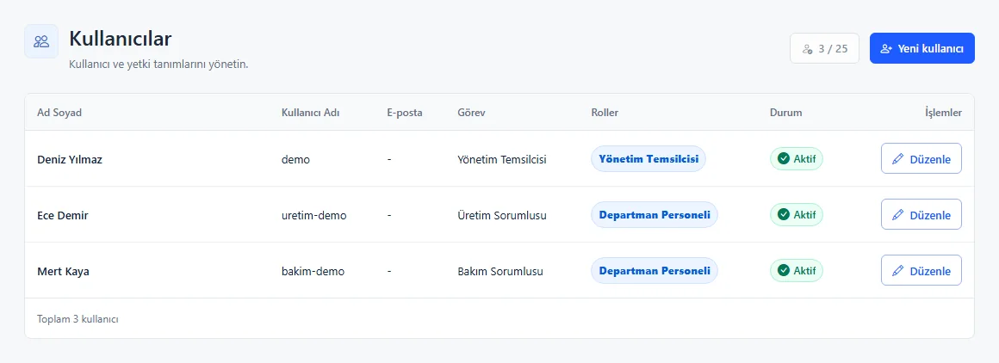

02 / BAŞLANGIÇ
Şirkete özel
çalışma alanı
Şirket kodu ve kişisel hesapla doğru ortama giriş. Her ekip kendi kayıtlarıyla çalışır.

03 / KULLANIM
Aradığınız işe hızlı ulaşın
Açık menü yapısı, arama ve filtreler; kayda giden yolu kısaltır.


04 / SAHADA KULLANIM
İşin olduğu yerde kayıt
Mobil Merkez; aksiyon, bakım arızası, uygunsuzluk, İSG notu ve geri bildirim için kısa yol sunar.
Telefonu açın. Konuyu kaydedin. Takibi başlatın.


05 / GÜNLÜK TAKİP
Sorumluluğun adresi belli
Aksiyonlar ve Görevlerim, kimin neyi ne zamana kadar yapacağını görünür kılar.
06 / KALİTE YÖNETİMİ
Kayıtlar birbirinden kopuk değil
Uygunsuzluk, denetim ve doküman süreçleri takip edilebilir kayıtlar oluşturur.


07 / KATILIM
Gözlemden aksiyona
İSG notları aksiyona dönüşebilir; öneri, şikayet ve müşteri geri bildirimleri kayda alınır.
08 / OPERASYON
Ekipman ve işler aynı görünümde
Bakım arızası mobilde açılır, webde izlenir. Araç tarihleri, kalibrasyon süreleri ve zimmet kayıtları da düzenli takip edilir.

09 / EKİP
İnsanlar, roller, sorumluluklar
Kullanıcı Yönetimi ve Organizasyon Şeması ekip yapısını görünür tutar.



10 / ÜST YÖNETİM
Önemli konular gözden kaçmaz
Yönetici özeti ve termin paneli, açık işleri ve gecikmeleri ayrı bir yönetim bakışında toplar.
11 / BİLGİLENDİRME
Takip sadece ekranda kalmaz
Site içi bildirimler, planlı e-posta hatırlatmaları ve dönemsel raporlar işin durumunu paylaşmayı kolaylaştırır.

VOLKAPORTAL
İşleri kaydetmek değil,
ilerletmek için.
Tek çalışma alanı. Net sorumluluklar. Görünür süreçler.
volkaportal.com